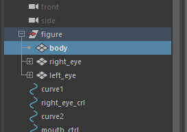
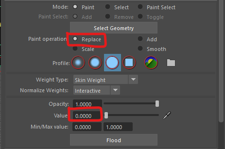

This can be the most challenging part of rigging a character. But it is important to do if you want your character to behave properly.
Weight painting is the final step so make sure you are happy with your rig before you start. If you have made a good model and rigged and skinned it well you should only need to do minor weight painting.
In the last worksheet we created a skeleton and bounded it to our character mesh in a process called skinning.
Each bone in the skeleton has influence over some of the veracities of our mesh. Maya distributes this influence intelligently based on your preferences, but generally, the closer the vertex is to a joint, the more influence it has.
You can see this on the head, if you rotate the head forward the chest moves, the mouth opens and the eyes shift in their sockets because the neck has too much influence over the bottom of the head and the top of the chest.
Weight painting is the process of re-distributing this influence. In this case, we want the head joint to dominate all the vertices in the head, and the neck to give up some of its influence on the chest.
It is very important that you save a copy of your scene before you start. It is very easy to find you have made the weights worse and it that situation its easier to just re-open the old file rather than try to repair it.


The box at the top lets you select the different joints in your skeleton, When you select a joint the you can see the influence it has on the mesh.

You can see here I have the hip joint selected.
The Areas that are whitest are influenced most by the hip joint, the white colour fades out showing how the influence reduces as it goes up the body and down the legs.
First we are going to fix the head.
Bellow this panel is the brush settings. Make sure yours match mine. We want to replace the existing weights using a solid brush with an opacity of 1 and a value of 1.
We want to paint the head so it is completely white so that the head joint has complete control. The neck should be grey as this should flex when the head is moved.
It can be useful to switch to colour ramp mode so you have a better idea of what you are painting. White is full influence, and blue is minimal influence.
To make the brush larger hold down the b key and the left mouse button whist moving the mouse left and right.

You should end up with this:

We can now smooth the transition from head to neck using the smooth operation and a smaller brush.
Now Try rotating the head controller, the eyes and mouth should stay in the right place and the head shouldn't folder over like it did before.

The head is fixed, but we still have some work to do on the neck so the chest doesn't rise up.

The rest of the mesh seems OK, but look out for other issues on your rig that you will need to fix.
If you need to alter the arms or legs, you just need to fix one side, then mirror the weights using skin > mirror skin weights in the top menu.
If you find you have a lot to fix, you may want to consider going back a step and improving the original mesh or rigging.